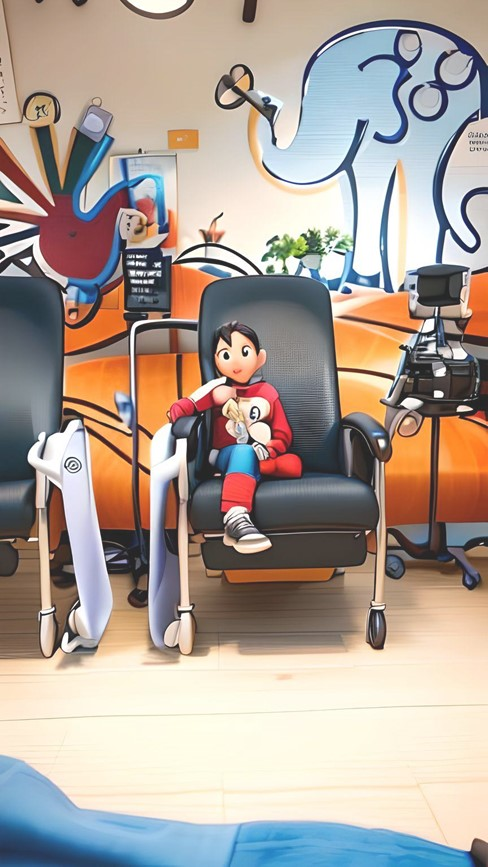

Por una detección y atención temprana.
¿Qué es el cáncer?
El cáncer infantil comprende numerosos tipos de tumores diferentes que se desarrollan en este grupno de población. Los tipos más comunes son la leucemia, el cáncer cerebral, el linfoma y los tumores sólidos como el neuroblastoma y el tumor de Wilms.
Tipos de cáncer más comunes en niños y adolescentes
| Quimioterapia | Cirugía | Transplante de médula ósea | Radioterapia | Sistema Sano | Sistema enfermo |
|---|---|---|---|---|---|
| Son medicamentos que eliminan las células cancerosas del cuerpo y pueden ser recibidos vía intravenosa, oral o intratecal | Para los tumores sólidos la cirugía es una parte esencial del tratamiento. | Es una forma de tratamiento relativamente reciente en la patología pediátrica. El objetivo es reemplazar las células de la médula ósea que están enfermas, por otras sanas. | Se basa en el efecto terapéutico del uso de las radiaciones ionizantes, y al igual que en el caso de la cirugía, es un tratamiento local. | Los genes supresores de tumores en las células normales impiden que se forme el cáncer | En ocasiones los cambios en el ADN inactivan los genes supresores de tumores y esto hace que las células se multipliquen sin control |
Videos reales de momentos en medio del tratamiento